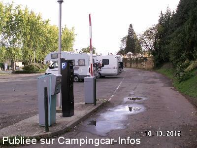

ASN = Aire de services avec stationnement nuit possible de :
SARLAT LA CANÉDA
(N° 587)
Accès/adresse :
Avenue du Général de Gaulle D704E
24200 SARLAT LA CANÉDA
24200 SARLAT LA CANÉDA
Latitude : (Nord) 44.89584° Décimaux ou 44° 53′ 45′′
Longitude : (Est) 1.21242° Décimaux ou 1° 12′ 44′′
Tarif : 2015
Stationnement
24 h : 7 €
48 h : 15 €
Service C-C de passage 2 h : gratuit
Type de borne : RACLET
Services :


Autres informations :
Aire goudronnée en pente
Tél : + 33(0)553 314 545
http://www.sarlat-tourisme.com/

Le 22/08/2014 par Gilles
Le 22/08/2014 par Gilles
Le 22/08/2014 par Gilles

Le 22/08/2014 par Gilles
Le 22/08/2014 par Gilles Boucart
Le 22/08/2014 par Gilles Boucart
de
Dandunord
le 04/11/2015 :
Aire située en bordure de route assez fréquentée, surtout le matin. Nous y avons passé la nuit du 21 au 22 octobre 2015 qui ne fut pas des plus calmes.
De plus, le terrain est en pente. Nous avons pu nous caler de justesse grâce aux cales quatro.
Son seul avantage, elle est proche du centre historique de Sarlat qui vaut vraiment le coup d'être visitée (environ 15 mn à pied).
Aire située en bordure de route assez fréquentée, surtout le matin. Nous y avons passé la nuit du 21 au 22 octobre 2015 qui ne fut pas des plus calmes.
De plus, le terrain est en pente. Nous avons pu nous caler de justesse grâce aux cales quatro.
Son seul avantage, elle est proche du centre historique de Sarlat qui vaut vraiment le coup d'être visitée (environ 15 mn à pied).
de
ge38690
le 06/10/2015 :
de passage le 14 septembre 2015,
aire utile pour aller voir "la ville à touristes" mais personnellement je ne passerais pas une nuit !.
de passage le 14 septembre 2015,
aire utile pour aller voir "la ville à touristes" mais personnellement je ne passerais pas une nuit !.
de
Damien
le 19/07/2015 :
Bonjour,
passé le 17 juillet, beaucoup de commentaires négatifs sur cette aire,
terrain en pente, il suffit de sortir ses cales et le problème est réglé, avantage nous sommes très proche du centre ville, la barrière est supprimée, il suffit de régler à l'horodateur. Aire bruyante, la circulation se calme nettement le soir et nous avons bien dormis avec les lanterneaux grands ouverts.Seul bémol lors de notre passage borne de ravitaillement hors service, et boulangerie à coté de l'aire fermée le samedi alors que ce n'est pas précisé.
Bilan: sur ce n'est pas une aire idéale, mais correcte pour y passer une nuit ou la journée pour visiter Sarlat.
Bonjour,
passé le 17 juillet, beaucoup de commentaires négatifs sur cette aire,
terrain en pente, il suffit de sortir ses cales et le problème est réglé, avantage nous sommes très proche du centre ville, la barrière est supprimée, il suffit de régler à l'horodateur. Aire bruyante, la circulation se calme nettement le soir et nous avons bien dormis avec les lanterneaux grands ouverts.Seul bémol lors de notre passage borne de ravitaillement hors service, et boulangerie à coté de l'aire fermée le samedi alors que ce n'est pas précisé.
Bilan: sur ce n'est pas une aire idéale, mais correcte pour y passer une nuit ou la journée pour visiter Sarlat.
de
D & D du 41
le 04/07/2015 :
19/06/2015
Je trouve indécent d'appeler le parking Aire de camping car. C'est dommage pour une si jolie ville. Nous avons -dû aller au camping le plus proche (+/- 4 km) et prendre le bus, donc frais supplémentaires. Autre remarque, les toilettes de la ville sont à l'image de l'aire pour camping car !!!!
19/06/2015
Je trouve indécent d'appeler le parking Aire de camping car. C'est dommage pour une si jolie ville. Nous avons -dû aller au camping le plus proche (+/- 4 km) et prendre le bus, donc frais supplémentaires. Autre remarque, les toilettes de la ville sont à l'image de l'aire pour camping car !!!!
de
Dizgail
le 07/06/2015 :
§cet air est collée à la route ou il y a beaucoup de passage, c'est très bruyant , si on ne vient que pour les services on ne paye pas , mais si on reste 2h ou 24h c'est 7€ quand même !!! dommage!!!
Surtout que Sarlat c'est vraiment à visiter tellement c'est beau.
Petite précision : il y a un autre parking en face à 300m pour les cc c'est 7€ aussi les places sont un peu serrées mais c'est moins en pente
§cet air est collée à la route ou il y a beaucoup de passage, c'est très bruyant , si on ne vient que pour les services on ne paye pas , mais si on reste 2h ou 24h c'est 7€ quand même !!! dommage!!!
Surtout que Sarlat c'est vraiment à visiter tellement c'est beau.
Petite précision : il y a un autre parking en face à 300m pour les cc c'est 7€ aussi les places sont un peu serrées mais c'est moins en pente
de
lepulch
le 10/08/2014 :
de passage 6 aout 2014 aire surchargées en pente au bord d'une route.pas de possibilité de stationner pour visiter sarlat. avons passez notre route.
de passage 6 aout 2014 aire surchargées en pente au bord d'une route.pas de possibilité de stationner pour visiter sarlat. avons passez notre route.
de
lebullois
le 08/06/2014 :
De passage en mai dernier, c'est clair que c'est pas une aire extraordinaire mais mème avec mon PL (8.30m) je n'ai eu aucun problème et si on dort côté cimetière ça passe.
De passage en mai dernier, c'est clair que c'est pas une aire extraordinaire mais mème avec mon PL (8.30m) je n'ai eu aucun problème et si on dort côté cimetière ça passe.
de
Deneuville
le 01/06/2014 :
le 16 mai 2014 : cette aire est très mal située, sale, en déclivité, très mal conçue, difficile pour grands gabarits, réalisée certainement par des gens incompétents n'ayant vraisemblablement jamais conduit de camping-car. De Plus, cette aire est bruyante puisque bordant le boulevard "périphérique" de Sarlat. Stationnement prohibitif par rapport au mauvais aménagement. Seul point positif : entrée gratuite pendant une heure afin de pouvoir effectuer la vidange.
Aire indigne d'une ville aussi belle que touristique.
Heureusement d'autres villes touristiques sont dotées d'aires sympathiques et quelquefois moins chères.
Aire à déconseiller.
Possibilité de stationner sur parking payant boulevard Voltaire, très proche du centre historique.
le 16 mai 2014 : cette aire est très mal située, sale, en déclivité, très mal conçue, difficile pour grands gabarits, réalisée certainement par des gens incompétents n'ayant vraisemblablement jamais conduit de camping-car. De Plus, cette aire est bruyante puisque bordant le boulevard "périphérique" de Sarlat. Stationnement prohibitif par rapport au mauvais aménagement. Seul point positif : entrée gratuite pendant une heure afin de pouvoir effectuer la vidange.
Aire indigne d'une ville aussi belle que touristique.
Heureusement d'autres villes touristiques sont dotées d'aires sympathiques et quelquefois moins chères.
Aire à déconseiller.
Possibilité de stationner sur parking payant boulevard Voltaire, très proche du centre historique.
de
Franc
le 21/05/2014 :
Aire à 7€/24H coincée entre le cimetière et une avenue bruyante :impossible de dormir . De plus sale ,en pente etc... A fuir absolument !indigne d'une ville touristique,qui se vante de recevoir 1 million de touristes par an.
Les aires de la proche vallée de la Dordogne ou de la Vézère sont bien plus agréables et de plus moins chères...!
Aire à 7€/24H coincée entre le cimetière et une avenue bruyante :impossible de dormir . De plus sale ,en pente etc... A fuir absolument !indigne d'une ville touristique,qui se vante de recevoir 1 million de touristes par an.
Les aires de la proche vallée de la Dordogne ou de la Vézère sont bien plus agréables et de plus moins chères...!
de
Monida
le 03/10/2013 :
Aire gratuite 1 heure il faut prendre un ticket..Proche du centre ville. Possibilité de se garer juste après le cimetière. Ville magnifique à visiter.
Aire gratuite 1 heure il faut prendre un ticket..Proche du centre ville. Possibilité de se garer juste après le cimetière. Ville magnifique à visiter.
de
Anita Bastrenta
le 14/08/2013 :
passage fin juillet 2013. aire saturée et véhicule à touche touche; nous sommes juste restés le temps de la visite de Sarlat et avons dormi ailleurs. Borne de paiement en panne.
passage fin juillet 2013. aire saturée et véhicule à touche touche; nous sommes juste restés le temps de la visite de Sarlat et avons dormi ailleurs. Borne de paiement en panne.
de
jami26
le 23/06/2013 :
Nous avons passé la nuit en juin 2013. Aire calme la nuit malgré la proximité de la rue, en pente, vite saturée surtout le vendredi soir en raison du marché le samedi matin.
Ville à visiter
Nous avons passé la nuit en juin 2013. Aire calme la nuit malgré la proximité de la rue, en pente, vite saturée surtout le vendredi soir en raison du marché le samedi matin.
Ville à visiter
de
lufloarsa
le 29/05/2013 :
§
Arriver en début d'après midi, pas de problème de stationnement vers 19 h complet
mais très agréable pour visiter Sarlat l'après midi et en début de soirée
la borne fonctionnait 7 €
§
Arriver en début d'après midi, pas de problème de stationnement vers 19 h complet
mais très agréable pour visiter Sarlat l'après midi et en début de soirée
la borne fonctionnait 7 €
de
couturier
le 26/04/2012 :
Le 18 Avril 2012
Aire toujours aussi bruyante et encombreé mais gratuite a cette époque !!!
Le 18 Avril 2012
Aire toujours aussi bruyante et encombreé mais gratuite a cette époque !!!
de
ronan
le 28/10/2011 :
bonjour,
vacances de toussaint 2011, aire pleine le vendredi dès l'après-midi, des cc partout sur les parkings autour, malgré le marché demain matin.
borne d'entrée hs, (donc pas de ticket) quand on appelle, on répond "ah bon, ça marche pas? ben vous n'avez qu'à ressortir par l'entrée".
la borne ne fonctionne pas.
bonjour,
vacances de toussaint 2011, aire pleine le vendredi dès l'après-midi, des cc partout sur les parkings autour, malgré le marché demain matin.
borne d'entrée hs, (donc pas de ticket) quand on appelle, on répond "ah bon, ça marche pas? ben vous n'avez qu'à ressortir par l'entrée".
la borne ne fonctionne pas.